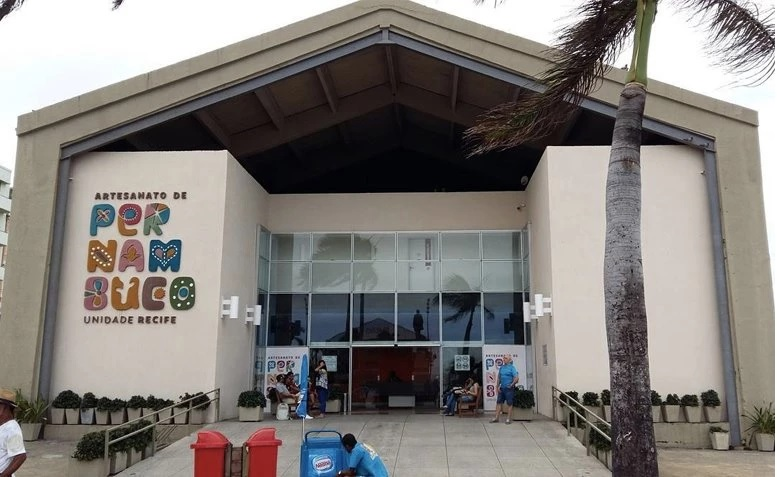

O Centro de Artesanato está localizado na frente da Praça do Marco Zero, então, você já pode emendar um passeio no outro. O local, que já funciona há alguns anos, abriga quase mil e quinhentos artesãos e oferece cerca de 25 mil peças para venda.
